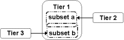

Multitiered experiments
Multitiered experiments are experiments that involve more than one allocation, where we are specific about how it is possible to achieve the randomization involved. As they involve multiple - two or more - allocations they have more than two tiers, and hence are multitiered. They differ from the majority of textbook designs, including split-plots designs, as these involve a single randomization and so are only two-tiered.
Multitiered experiments are not a new set of experimental designs. They are a class of existing experiments that have in common that they involve two or more allocations. They include two-phase, some superimposed, many animal and some plant experiments. Examples of multitiered experiments are available from the Examples menu.
Six types of multiple allocation, summarized in the following diagrams, have been identified: composed, allocated-inclusive, recipient-inclusive, coincident, double and independent. Note that allocated-inclusive and recipient-inclusive were referred to as randomized-inclusive and unrandomized-inclusive, respectively, by Brien and Bailey (2006). They restricted allocation to a randomization and the names used here allow for more general forms of allocation.
Composed and allocated-inclusive involve a chain of allocations with the arrows between the three tiers following one from the other. However, they differ in the relationship between the two allocations involved. The two composed allocations are independent, whereas allocated-inclusive allocations explicitly use the result of the first allocation in the second allocation. The Recipient-inclusive allocations, coincident and independent allocations can be characterised as two-one allocations. Recipient-inclusive allocations take the result of the first allocation and allocate to it. coincident and independent allocations are similar in that they both allocate to the same set of objects. For coincident allocations, the two allocations have some of the same generalized factors to which factors are randomized, whereas for independent allocations they do not. Double allocations are one-two allocations.
| Composed Definition; Examples |
Coincident Definition; Examples | |
|
| |
| Allocated inclusive Definition; Examples |
Double Definition; Examples | |
|
| |
| Recipient inclusive Definition; Examples |
Independent Definition; Examples | |
|  | ||
|
|